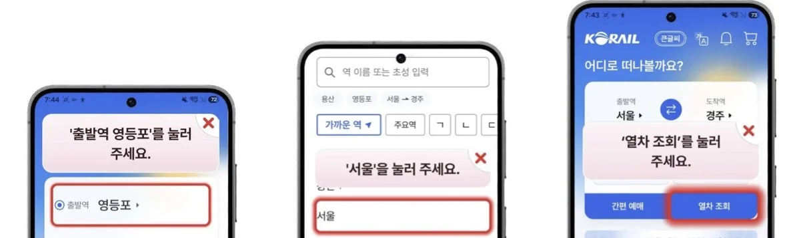
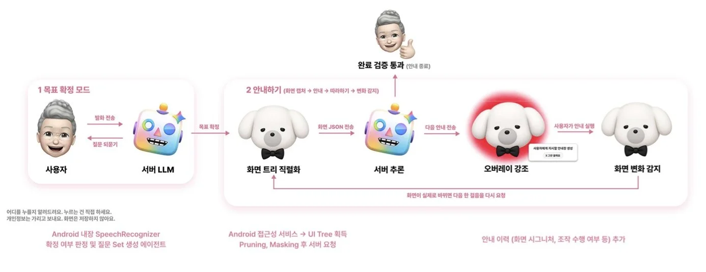
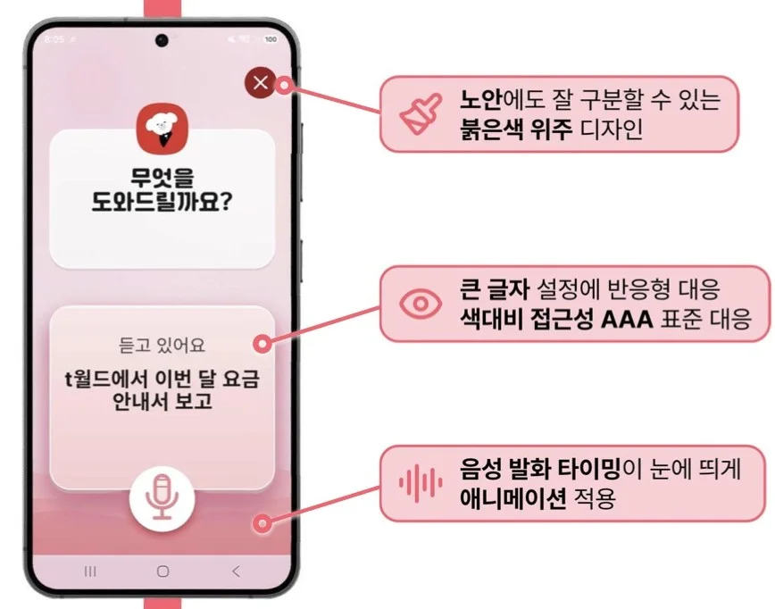

02 · PRODUCT · LLM EVALUATION
대신 누르지 않고 가르쳐 주는 AI,
그 AI가 제대로 묻는지 숫자로 확인했다
다비는 어르신이 말로 원하는 일을 말하면, 다른 앱 화면 위에 “여기를 누르세요”를 띄워 한 단계씩 가르치는 Android 앱입니다. AI가 폰을 마음대로 조작한다는 불안을 없애고, 결국 스스로 쓰게 만드는 것이 목표였습니다. 기술을 잘 만드는 것보다, 사람이 안심하고 사용할 수 있는 방식을 먼저 고민했습니다.

01 · Context문제
인터뷰와 주변인 122명 설문에서, 어르신들은 스마트폰을 “몰라서”가 아니라 “잘못 눌러 고장 나거나 돈이 나갈까 봐” 손을 대지 못했습니다. 그래서 다비는 버튼을 대신 누르지 않고, 누를 곳만 화면 위에 표시합니다.

제가 맡은 문제는 두 가지였습니다. 목표를 확인하려고 되묻는 대화가 끝나지 않는 문제, 그리고 근거 없이 올라온 LLM 비용 절감 제안들입니다.
서버 추론 파이프라인은 팀원이 만들었습니다. 저는 그 위에서 LLM이 들어가는 자리를 실험과 측정으로 검증하고, LLM 출력을 받는 앱 화면을 맡았습니다. PR 57건(머지 54) · 이슈 59건.
02 · Approach ①프롬프트 A/B 실험
팀 문서의 프롬프트 개선 제안은 실측 근거가 0건이었습니다. 개인 키로 분리한 실험 공간에서 운영 프롬프트(v1)를 한 번에 한 요소씩 바꿔 v6까지 만들고, LLM이 어르신을 연기하는 사용자 시뮬레이터로 대화를 끝까지 굴렸습니다. 픽스처 22개 · temperature 0 · 응답 캐시.
| 지표 | v1 (운영) | 개선 후 |
|---|---|---|
| 목표 도달 | 21 / 22 (95.5%) | 22 / 22 (100%) |
| 5왕복 상한 초과 | 1건 | 0건 |
| 경계 사례 평균 턴 | 2.60 | 2.00 |
| 평범한 목표 16개 | — | v1과 동수 (기존 동작 유지) |
실험 중 발견
- 턴 수가 가장 적은 버전(1.50턴)은 필요한 질문을 건너뛴 것이었다 → 효율 지표에 짝지을 “생략” 지표를 새로 만들었다.
- “되묻기를 우선하세요” 같은 서술 규칙은 무시됐고, “되물은 횟수 0회, 남은 예산 4회”처럼 숫자로 준 규칙은 지켜졌다.
- 프롬프트 예시에 채점 대상 문장이 들어간 버전은 정답 누출로 보고 비교에서 뺐다.
한계 — 표본 22개, 지어낸 발화, STT 오류 없음, 분산 미측정. 결론은 방향성 근거로만 썼습니다.
02 · Approach ②비용 절감 제안 검증
규칙 기반 호출 생략, 화면 서명 캐시, 우선순위 부기, 트리 축소 — 4건을 프로덕션 코드 변경 없이 검증했습니다. 점수 함수(가중치 24개), 정답 케이스 18개, pytest 31개, 모델 호출 72회.
- 규칙 기반 생략 · 서명 캐시는 데이터로 기각. 앱서랍에서 “카메라 열기”의 규칙 1위는 검색바였다. 서명을 캐시했다면 다른 채팅방을 같은 화면으로 봤을 것이다.
- 우선순위 부기는 정확도 100% → 100%, 프롬프트 +11%. 기준선이 100%인 천장 효과라 “망가지지 않는다”까지만 결론 냈다.
- 더 어려운 데이터가 필요해 실기기 로그를 파싱하는 수집 경로를 만들었다. 카카오T 11화면에서 점수 1위–LLM 선택 일치 5/10, 점수 차 신뢰도 가설은 Fisher p = 0.52로 기각.
- 부수 발견: 배달의민족 팝업이 안내 대상을 100% 가려 같은 안내가 3번 반복되는 버그 → 좌표만으로 가림을 계산하는 설계안과 함께 이슈로 올렸다.
02 · Approach ③④⑤관측 · 지표 · 프로브
보기 0개 × 6/6의 구조적 원인
운영 로그엔 개수·길이·코드만, 문장 전문은 개발 빌드에서만 남기도록 설계했다. 첫 실사용에서 되묻기 6번 모두 보기가 0개였다 — 프롬프트가 고유명을 보기로 만들지 못하게 막는데, 되물을 대상이 거의 항상 고유명이었다.
기준선이 오염되기 전에
앱은 모든 질문을 읽도록 바뀌었는데 평가 도구는 첫 질문만 셌다. 실기기로 재니 실제 음성 안내 글자 수의 72%만 집계(114자 vs 158자). 팀 기준선의 대표 지표라 바로 고쳤다.
4.7초 무표시 구간
근거 없는 “완료”는 실제 모델로 재현되지 않는다. 가짜 LLM에 완료 강제·지연 주입 스위치를 만들고(개발 환경 전용, 4중 차단), 지연 0 대조군으로 서버와 무관한 4.7초 무표시 구간을 찾아 대기 표시와 중지 버튼을 남겼다.
수치로 재고 고친 화면
앱 입구 버튼 33.48 → 91.85dp(기준 56dp), 카드 흔들림 63 → 0dp(28칸 × 기기 2대), 배율 2.0에서 보기 2 → 4개, 보조 문구 대비 4.4 → 7.4:1(AAA).


03 · Result전 → 후
| 구분 | 항목 | 전 | 후 |
|---|---|---|---|
| AI | 목표 구체화 도달률 (22개) | 95.5% | 100% |
| AI | 되묻기 5왕복 상한 초과 | 1건 | 0건 |
| AI | 규칙 기반 LLM 생략 | 도입 검토 | 7/7 오답 → 기각 |
| AI | 화면 서명 캐시 | 도입 검토 | 충돌 4/4 → 기각 |
| DATA | 평가 도구 TTS 집계 | 실제의 72% | 100% |
| DATA | 완료 재확인 무표시 구간 | 4.7초 · 중지 불가 | 대기 표시 + 중지 |
| UX | 앱 입구 버튼 높이 (글자 2배) | 33.48dp | 91.85dp |
| UX | 보조 문구 대비 | 4.4 : 1 | 7.4 : 1 (AAA) |
팀 전체 성과 — SKT FLY AI 프로젝트 부문 최우수상, 어르신 40명 테스트에서 앱 실행 시간 68초 → 42초. 다른 팀원의 평가 도구와 수치는 이 페이지에 넣지 않았습니다.
04 · Decisions넣지 않은 이유
왜 계획(plan) 단계가 없나?
화면은 매 순간 바뀌어 미리 세운 계획이 쉽게 틀어진다. 효과가 있었던 건 검증 단계와 가드레일 단일 결정 지점이었고, 계획은 2026-08-18 무기한 연기됐다.
왜 규칙으로 LLM을 대체하지 않나?
규칙 점수가 확신한 7건이 모두 틀렸다. 눈에 띄는 요소와 사용자가 원하는 요소는 다르다.
LLM 출력을 어떻게 믿나?
모델의 “완료”를 화면 트리에 다시 맞춰 verified / inconclusive / contradicted로 가르고, 보류면 한 번 더 확인한다.
개인정보는?
기기 1차 + 서버 2차 마스킹. 음성은 전화번호를 지우면 목표가 사라져 마스킹하지 않는 대신 로그에 남기지 않는다.
05 · Learned회고
효율 지표에는 항상 품질 지표를 짝짓는다
LLM은 서술 규칙보다 셀 수 있는 규칙을 지킨다
기준선이 100%면 결론의 범위를 줄인다
실사용은 팀 내부 테스트 수준이라 사용자 수나 과제 성공률 같은 지표는 아직 없습니다. 저장소가 비공개라 코드 대신 화면과 전후 표로 보여드립니다.